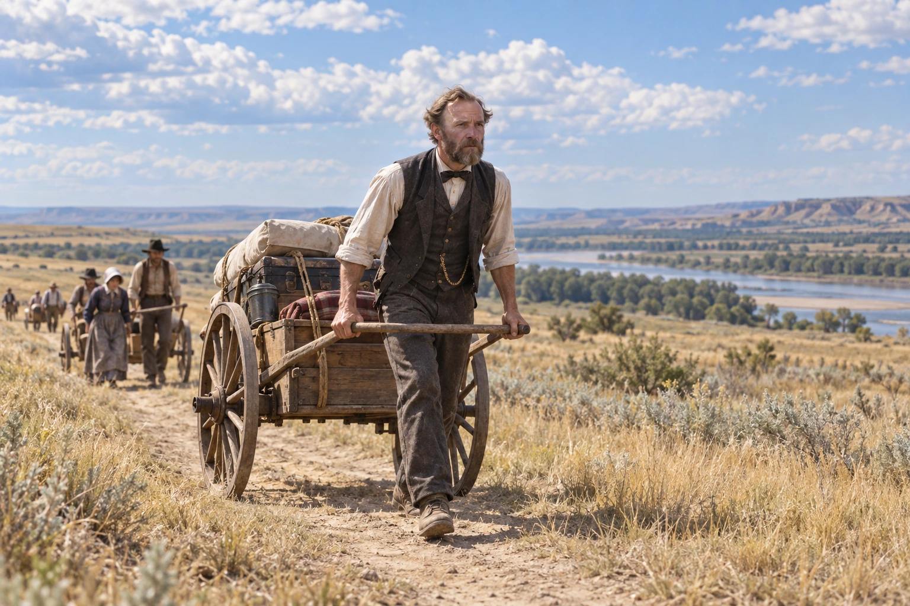
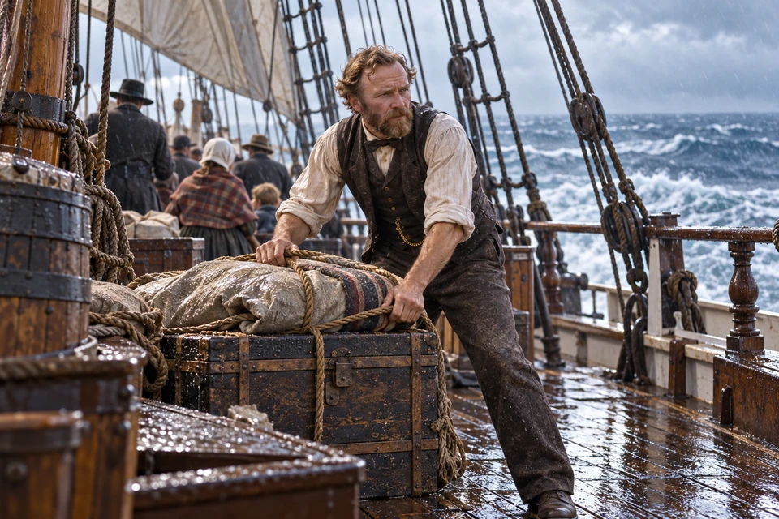
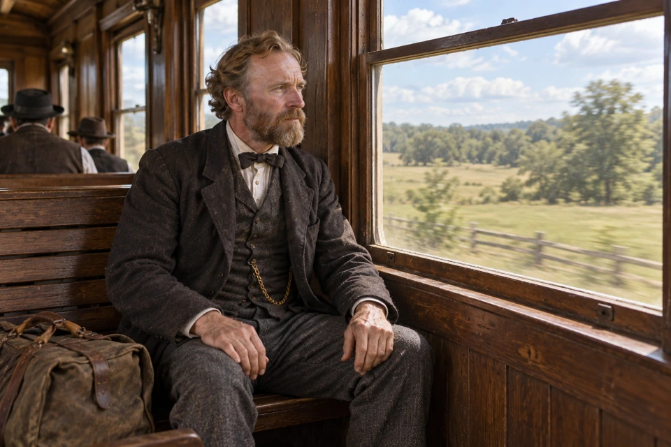
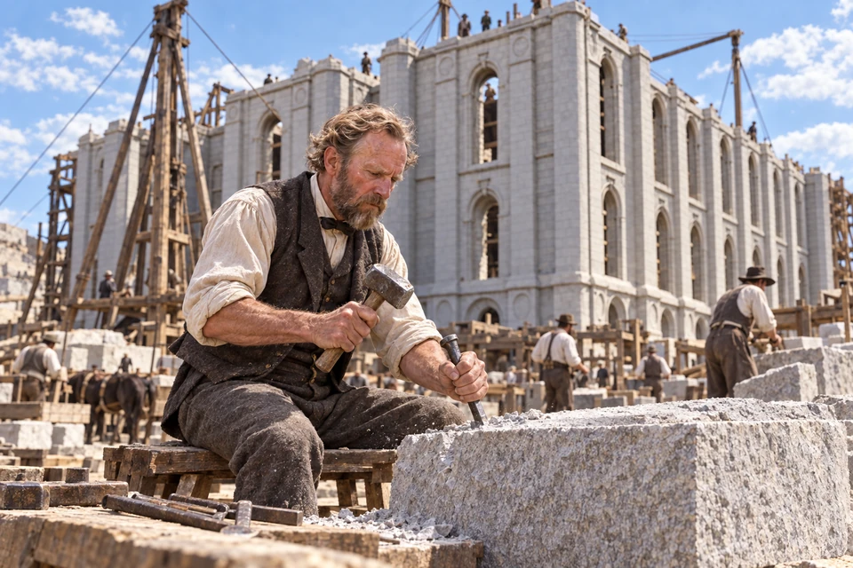
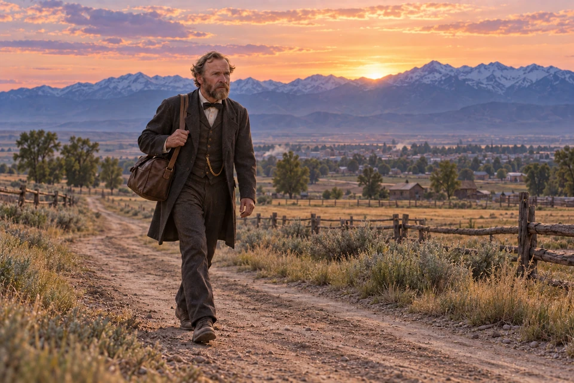
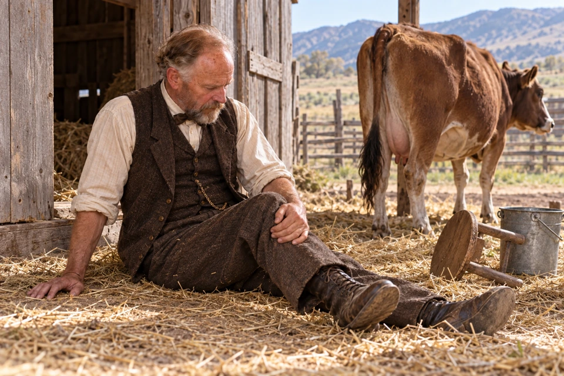
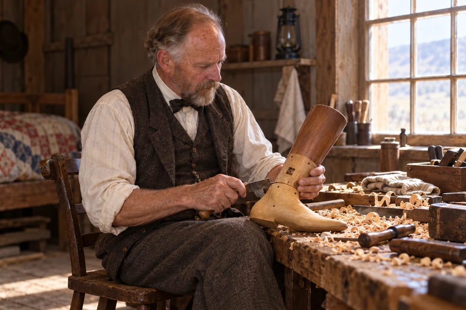
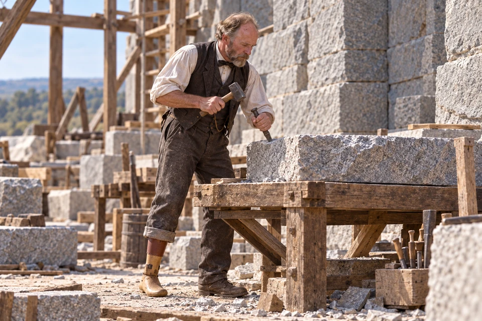
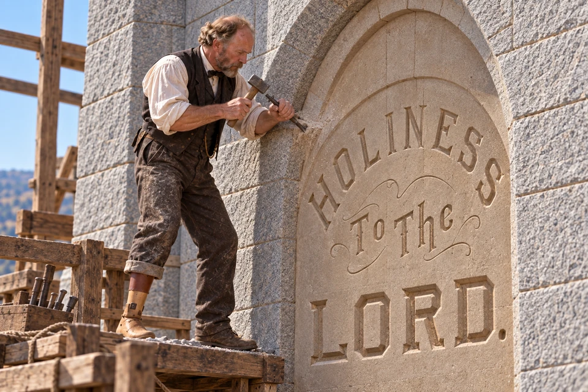

Church film · Dramatization · 15:03
Watch Only a Stonecutter
Film and preview: The Church of Jesus Christ of Latter-day Saints

Moyle traveled with the Ellsworth handcart company in 1856.
Moyle Park, Alpine: Ensign Peak Foundation site history John Rowe Moyle: Church History Biographical Database John Rowe Moyle’s journal, 1856–1858 Edmund Ellsworth handcart company, 1856
John Rowe Moyle brought his family and stonecutting skills to Utah.
Follow his family across the ocean and plains, then through injury, recovery and temple service, with journal passages and family memories along the way.
John Rowe Moyle’s journey to Utah was a family journey. The Church’s migration record places him, his wife and five children in Edmund Ellsworth’s company in 1856. John was forty-eight; the children ranged from five-year-old John to nineteen-year-old Elizabeth. The record preserves their names together, reminding us that the handcart carried the needs of a household, not merely the possessions of one determined traveler. They reached Salt Lake City on September 26.
For the children, the journey meant leaving the home they had known and traveling with their parents toward a new one. Their ages help us see the family behind the familiar handcart image. Before following John into his Utah home and temple work, we can turn back to the sea crossing he described in his own journal.
Moyle listens during a gathering on the ship's deck.
Moyle sailed from Liverpool aboard the Samuel Curling on April 19, 1856. His journal remembers the Saints gathering on deck the following day to hear Dan Jones and records his appreciation for the instruction. The passengers were organized into wards.
People were sustaining a worshipping community while they traveled toward an unfamiliar home. The ship carried their luggage, but it also carried the habits of faith and fellowship they were taking with them.

Moyle’s Atlantic crossing brought wet decks and shifting belongings before the overland journey began.
The crossing was far from a steady passage over quiet water. In an early-May storm, water reached the sleeping places and left beds wet for several days. During another rough stretch, the vessel rolled and luggage was thrown about.
Moyle’s account records the discomfort alongside gratitude for his family’s preservation. Boston came into view in May, and they landed on May 23.

Moyle travels by rail after landing in Boston.
On May 26, the travelers continued from Boston by rail, reaching Iowa on June 2. After about a week in camp, the Moyle family began the next stage of its journey with the handcarts.

Moyle brought his skills as a stonecutter to the long work of building the Salt Lake Temple. The unfinished walls recall its construction years.
Moyle Park, Alpine: Ensign Peak Foundation site history Lift Where You Stand
The Moyles made their Utah home in Alpine, where farm work and family life continued alongside John’s work as a stonecutter. His stone house still stands at the historic property. The surviving home helps us picture the two settings of his service: a household that needed daily care and a temple that needed the practiced work of his hands. The Ensign Peak Foundation’s site history describes him leaving the family’s horse for work on the farm while he made his way to Salt Lake City.
The work at home and the work on the temple were part of one family’s life. Keeping a horse on the farm made a difference to the people there. At the building site, Moyle offered the skill of a man accustomed to shaping stubborn material patiently, a little at a time.

Moyle on the road between home and work.
Lift Where You Stand Moyle Park, Alpine: Ensign Peak Foundation site history
Later accounts remember a Monday departure before daylight, a working week in Salt Lake City, and a Friday walk home. The Ensign Peak Foundation’s history says that he lodged with a son during the working week. Home and workplace belonged to the same life, even though they were separated by a long journey. The walk joined them: outward toward the building site, then back toward the household in Alpine.
That rhythm gave his service a place in ordinary life: a road out, a week of work, and a road home. The miles connected the temple with the household that shared the cost of his time away. Behind the finished stone was a family living through those working weeks.

The aftermath of the cow’s kick described in the later family account.
Jeffrey R. Holland recounts the family tradition Dieter F. Uchtdorf: Lift Where You Stand
In the later family account retold by Jeffrey R. Holland, a cow bolted during milking and kicked Moyle below the knee, shattering the bone. Family and friends used a door as an operating table, and the injured leg was amputated.
The story pauses here with a man in need of care. The hands that had worked stone could not put the broken leg right. Family and friends had a place in his survival, and their help deserves to remain beside the better-known story of his determination.

Moyle shapes a wooden leg.
Lift Where You Stand Moyle Park, Alpine: Ensign Peak Foundation site history The family account of recovery: Jeffrey R. Holland
As the wound healed, Moyle began shaping a wooden leg. The replacement included a joint for the ankle and foot. Walking hurt. He practiced inside the house, then in the yard, and eventually farther around his property, extending what he could manage a little at a time.
The Ensign Peak Foundation’s site history reports that Moyle’s wooden leg is displayed at the Daughters of Utah Pioneers Museum in Salt Lake City. In the picture, the task has become close and personal: a craftsman shaping something he will depend on with every step.

The stonecutter at work again, with a wooden leg.
Lift Where You Stand Moyle Park, Alpine: Ensign Peak Foundation site history The family account of recovery: Jeffrey R. Holland
In the family account, Moyle gradually regained enough strength to resume the journey to temple work. Returning meant putting his practiced hands to use again.
He returned with the knowledge and skill he had spent a lifetime learning. The injury had changed how he moved, but he still had work to offer. Remembering him at the stone brings the familiar account back to a person: a craftsman finding his way into useful work again, with the cost of recovery behind each step.

Moyle works on the upper inscription panel.
Family remembrance of John Rowe Moyle: Church Newsroom Salt Lake Temple restoration, August 2025: Church Newsroom John Rowe Moyle: Church History Biographical Database
The temple’s inscription gives this story a place to rest: “Holiness to the Lord.” An official 2025 restoration report credits John Rowe Moyle with the carving and describes renewed gilding of the east-center-tower panel. His life ended on February 15, 1889, before the temple’s 1893 dedication. The inscription remained, part of a building whose completion he did not live to see.
Those words turn our attention from the achievement of a builder to the One the house was built to honor. Moyle did not live to attend its dedication. People who came afterward would look up and read the inscription, often without knowing the name or the story of the man remembered for carving it.
Church film · Dramatization · 15:03
Film and preview: The Church of Jesus Christ of Latter-day Saints
Whose skilled work do you overlook in the places you value?
How can you honor persistence while respecting another person’s limits?
What help allows each member of a community to contribute?